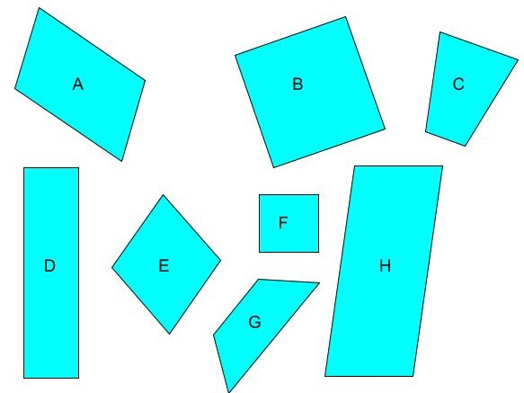
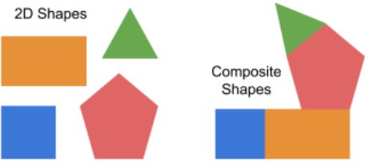

Do It! Animation and Drawing by Do Ink: Changing Shapes
 The Challenge
The Challenge
Shapes and figures all have unique properties. Your challenge is to learn about the properties and attributes of shapes and then model them with an animation using Animation and Drawing by Do Ink.
Project Steps
-
Identify Attributes of Shapes
-
Create an Animation
-
Compose a Story
-
Share your Animation
Identify Attributes of Shapes
Look at the shapes below.
- What property or attribute do all of them share?
- Does this change when the shape is turned?
- Does this change if the shape is moved?

All of these shapes share the attribute of having four sides. You can also say that they have four angles. All shapes with four sides are quadrilaterals.
- Think of other names you can give to each shape. On your grid paper, write down at least one other name for A, B, D, E, and F.
- On the same grid paper, draw another example for each name that you listed.
- Now draw three more quadrilaterals that are different. Make sure that it cannot be described by any name you listed in step 2.
- Think about all of these shapes.
- Does moving or turning the shape change its name?
- Does moving or turning the shape change its attributes?
- Save this activity to upload as part of your Project Submission.
In this project you learned how to make small changes to shapes. Some changes do not change a shape’s attributes.
- Can you think of changes that will change an attribute of a shape?
- Can you think of changes that will NOT change an attribute of a shape?
Create an Animation
- Draw an object, such as a triangle or circle.
- Add a frame and copy the object, but make a small change in the position of the shape.
- Repeat this one more time.
- Now draw a quadrilateral, such as a rectangle or rhombus.
- Add a frame and copy the shape. Use the tool to make a small change to one of the angles.
- Repeat this one more time.
- Did you make your picture move?
- How did the picture move?
- Is the second shape still a quadrilateral?
Learning to draw similar pictures is just part of Bring the Ordinary to Life. Next, you will add more frames.
A frame is a single drawing. Several frames in a row create a series or sequence. Drawing lots of frames allows you to tell a longer story.
.jpg "frames of a flower getting drawn")
With Animation and Drawing, you can add many frames to tell a long story or explain an idea.
Compose a Story
Everything in our world is made up of shapes. Understanding how you can change the attributes of shapes to create new shapes and explaining those changes will help you solve problems and communicate better.
Create a composition using shapes to tell a story. Decide what story you would like to animate. Think about these questions as you get started:
- What shapes will you include in your drawing?
- Which parts will stay still and which parts will move?
- From one frame to the next, does it look better to make big changes or small changes?
Animation Ideas:
- Draw someone riding a bike or skateboard.
- Show a person walking.
- Demonstrate a math problem. Show how basic shapes can be combined to create a composite shape.

- Show a plant growing.
- Draw a face smiling.
- Animate part of a sport like bouncing a basketball or swinging a bat.
- Draw the sunset or the moonrise.
Share Your Animation
When your animation is complete, share it with your facilitator, friends, and family.
- Go back to the Gallery on the Do Ink app.
- Locate your finished animation.
- Click on the white square with an arrow coming out of the top. Select Share.
- Click on Video and select the size you want.
- When you choose the size, think about where you will post your video and how much storage space you have.
- The 720x720 size will take up the most space, but it will look better if you plan to show your video full screen.
- You can find your saved video in your Photos app.
- Save your animation.